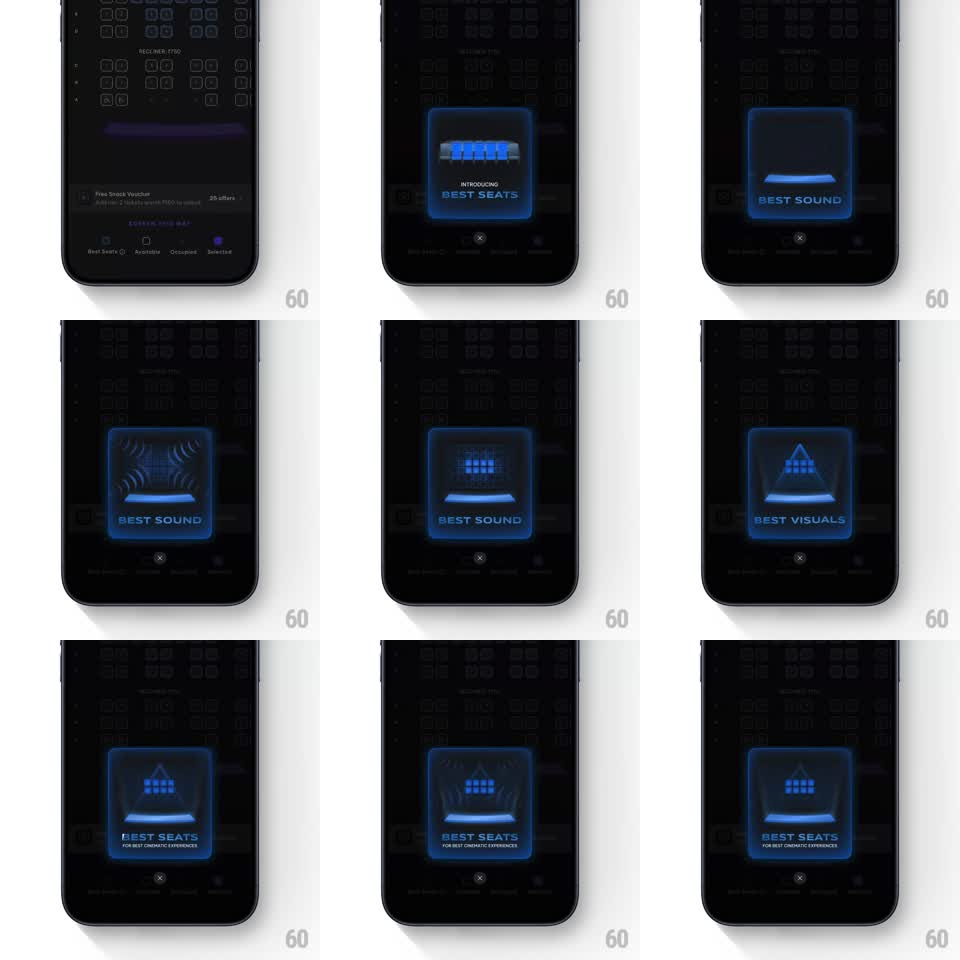

Media
Frame-by-frame

Rebuild this animation 1:1: District's seat-picker intro - a neon-blue glowing modal over the dark cinema seat map cycles through wireframe feature idents (seat rows, sound waves, screen triangle) for "BEST SEATS", "BEST SOUND", and "BEST VISUALS", then resolves into a final combined message.

Rebuild this animation 1:1: District's seat-picker intro - a neon-blue glowing modal over the dark cinema seat map cycles through wireframe feature idents (seat rows, sound waves, screen triangle) for "BEST SEATS", "BEST SOUND", and "BEST VISUALS", then resolves into a final combined message.
## Integration
Integration: stack-agnostic spec - springs given as stiffness/damping, timed motions as duration + curve; map every value to your framework and animation library of choice.
## Scene
Dark cinema seat-map screen (dimmed grid of seats behind). Center: a rounded-square modal outlined in glowing neon blue, holding an animated wireframe illustration and a caption ("INTRODUCING BEST SEATS", "BEST SOUND", "BEST VISUALS"). A close X sits just below the modal.
## Motion spec
Pattern: looping feature morph inside a glowing modal - three wireframe idents cross-morph on a timer.
- The modal fades/scales in (scale 0.9 -> 1, 300ms, ease-out) with its neon border glowing (shadow pulse +/- 20% blur, 2s loop).
- Ident 1: wireframe seat row assembles dot by dot (600ms). Caption "INTRODUCING BEST SEATS" fades in below it (200ms).
- Every ~2s the wireframe morphs to the next ident (seats -> sound arcs -> screen triangle) via a dot-grid dissolve and reassemble (700ms, ease-in-out); captions crossfade (200ms).
- Sound arcs animate concentric waves emitting from the seat (scale 0.6 -> 1.2, fade out, 1s loop); the visuals triangle pulses scanlines.
- Sequence loops seats -> sound -> visuals -> final card ("BEST SEATS FOR BEST CINEMATIC EXPERIENCES") which holds.
## Calibration
- Everything inside the modal is wireframe neon blue on black - no filled shapes.
- The morph reads as the same dots rearranging, not three separate illustrations.
## Reduced motion
Idents crossfade without dot dissolve (250ms); glow pulse stops.
## Don't miss
- The seat map behind stays dimmed and static - all motion lives inside the modal.
- The close X is present from the first frame; the modal never blocks dismissal.